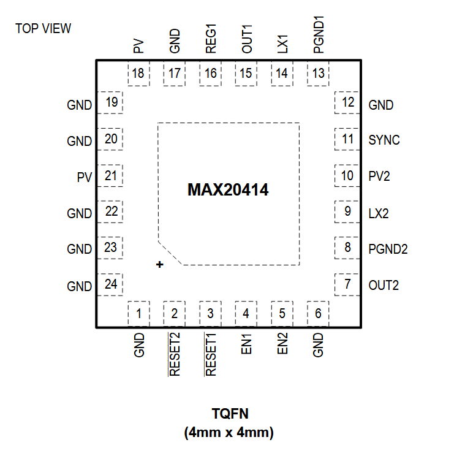
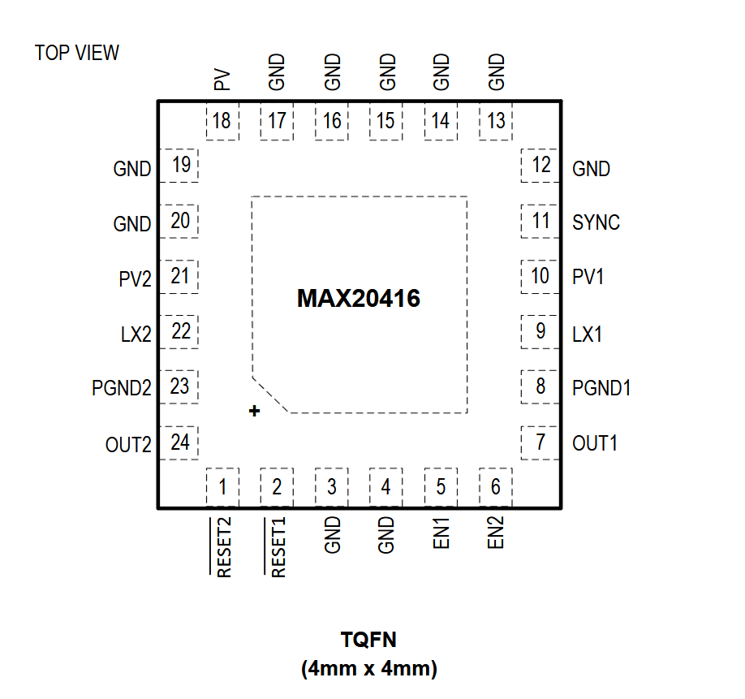

MAX20414

Pin Description
| PIN | NAME | FUNCTION |
|---|---|---|
| 1 | GND | Ground. Connect all PGND and GND pins together. |
| 2 | RESET2 | Open-Drain RESET Output for OUT2. To obtain a logic signal, pull up RESET2 with an external resistor. |
| 3 | RESET1 | Open-Drain RESET Output for OUT1. To obtain a logic signal, pull up RESET1 with an external resistor. |
| 4 | EN1 | Active-High Enable Input for OUT1. Drive EN1 high for normal operation. |
| 5 | EN2 | Active-High Enable Input for OUT2. Drive EN2 high for normal operation. |
| 6,17,19, 20,22,23,24 | GND | Ground. Connect all PGND and GND pins together. |
| 7 | OUT2 | OUT2 Voltage-Sense Input/Feedback Pin. |
| 8 | PGND2 | Power Ground for OUT2. Connect all PGND and GND pins together. |
| 9 | LX2 | Inductor Connection. Connect LX2 to the switched side of the inductor. |
| 10 | PV2 | Power Input Supply for OUT2. Connect a 4.7μF ceramic capacitor from PV2 to PGND2. |
| 11 | SYNC | SYNC I/O. When configured as an input, connect SYNC to GND or leave unconnected to enable skip-mode operation under light loads. Connect SYNC to PV or an external clock to enable fixed-frequency forced-PWM-mode operation. When configured as an output (factory-configured), connect SYNC to other device’s SYNC inputs. |
| 12 | GND | Unused. Connect to ground. |
| 13 | PGND1 | Power Ground for OUT1. Connect all PGND and GND pins together. |
| 14 | LX1 | Inductor Connection. Connect LX1 to the switched side of the inductor. |
| 15 | OUT1 | OUT1 Voltage Output. |
| 16 | REG1 | Open Supply for OUT1. Connect a 0.33μF ceramic capacitor from REG1 to OUT1. |
| 18 | PV | Analog Input Supply. Connect a 1μF or larger ceramic capacitor from PV to GND. |
| 21 | PV | Input Supply. Connect to PV (pin 18) or PV2 (pin 10) through PCB trace. |
| - | EP | Exposed Pad. Connect the exposed pad to ground. Connecting the exposed pad to ground does not remove the requirement for proper ground connections to PGND. The exposed pad is attached with epoxy to the substrate of the die, making it an excellent path to remove heat from the IC. |
MAX20416

Pin Description
| PIN | NAME | FUNCTION |
|---|---|---|
| 1 | RESET2 | Open-Drain RESET Output for OUT2. To obtain a logic signal, pull up RESET2 with an external resistor. |
| 2 | RESET1 | Open-Drain RESET Output for OUT1. To obtain a logic signal, pull up RESET1 with an external resistor. |
| 3,4,12,14, 15,16,19,20 | GND | Ground. Connect all PGND and GND pins together. |
| 5 | EN1 | Active-High Enable Input for OUT1. Drive EN1 high for normal operation. |
| 6 | EN2 | Active-High Enable Input for OUT2. Drive EN2 high for normal operation. |
| 7 | OUT1 | OUT1 Voltage-Sense Input/Feedback Pin. |
| 8 | PGND1 | Power Ground for OUT1. Connect all PGND and GND pins together. |
| 9 | LX1 | Inductor Connection. Connect LX1 to the switched side of the inductor. |
| 10 | PV1 | Power Input Supply for OUT1. Connect a 4.7μF ceramic capacitor from PV1 to PGND1. |
| 11 | SYNC | SYNC I/O. When configured as an input, connect SYNC to GND or leave unconnected to enable skip-mode operation under light loads. Connect SYNC to PV or an external clock to enable fixed-frequency forced-PWM-mode operation. When configured as an output (factory-configured), connect SYNC to other device’s SYNC inputs. |
| 13 | PGND | Power Ground. Connect all GND and PGND pins together. |
| 17 | GND | Analog Ground. Connect all GND and PGND pins together. |
| 18 | PV | Analog Input Supply. Connect a 1μF or larger ceramic capacitor from PV to GND with a 10Ω resistor in series to the supply voltage. |
| 21 | PV2 | Power Input Supply for OUT2. Connect a 4.7μF ceramic capacitor from PV2 to PGND2. |
| 22 | LX2 | Inductor Connection. Connect LX2 to the switched side of the inductor. |
| 23 | PGND2 | Power Ground for OUT2. Connect all GND and PGND pins together. |
| 24 | OUT2 | OUT2 Voltage-Sense Input/Feedback |
| - | EP | Exposed Pad. Connect the exposed pad to ground. Connecting the exposed pad to ground does not remove the requirement for proper ground connections to PGND. The exposed pad is attached with epoxy to the substrate of the die, making it an excellent path to remove heat from the IC. |